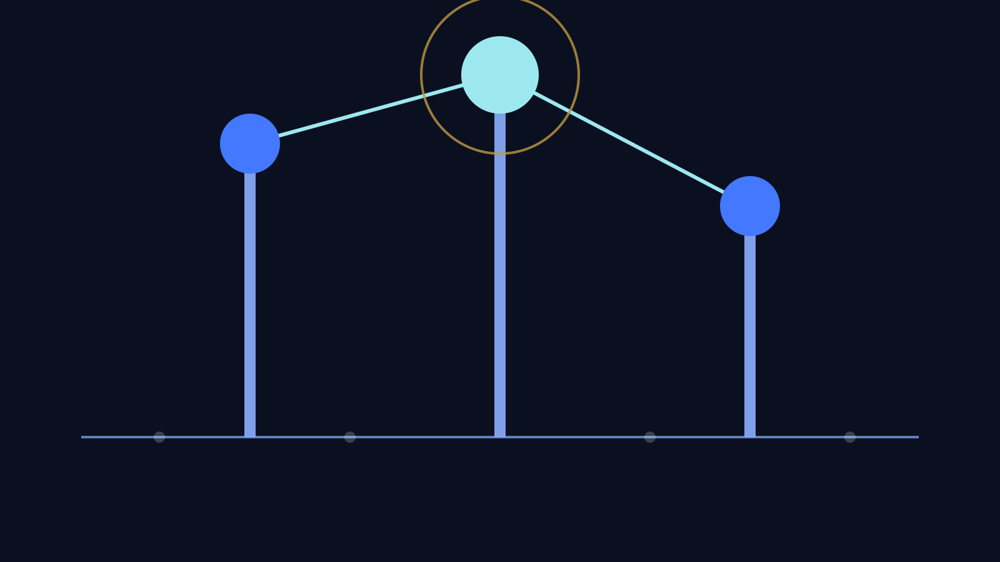

肩書きは、約束のためにある。
代表取締役は進む方向と責任を引き受け、社長代行と副社長は事業を動かす。仲間は専門性で現場を支える。役割を明確にするのは、力を比べるためではなく、お互いが安心して力を出し切るためです。
Leadership & Organization
誰が決め、誰が動き、誰が支えるのか。見える組織は、安心して挑戦できる組織です。

企画、設計、分析、自動化を担い、経営と現場をつなぐチームです。
代表取締役は進む方向と責任を引き受け、社長代行と副社長は事業を動かす。仲間は専門性で現場を支える。役割を明確にするのは、力を比べるためではなく、お互いが安心して力を出し切るためです。